Início/Conceitos/5 · Como o Nemesis lê código
conceito 5 · análise de códigoComo o Nemesis lê código: AST, pipeline e detecção semântica
Para entender intenção, não basta procurar texto. Eu parseio o código em árvore (AST) e visito os nós, rodo um pipeline de camadas do mais barato ao mais caro, meço entropia para flagrar payload ofuscado e sigo o dado da fonte ao sink (taint).
O tree-sitter transforma o código em uma árvore sintática (AST). Eu caminho por essa árvore e, em cada nó, chamo um conjunto de visitors, cada visitor é um método que reconhece um padrão semântico. Isso é parte de um pipeline em camadas: byte, entropia, regex, manifesto, ide, exfil, AST e por fim o decoder recursivo. A entropia de Shannon denuncia strings que parecem payload codificado, e o taint tracking liga uma fonte sensível a um sink perigoso dentro do arquivo.

Do zero: AST, Visitor e pipeline
Um analisador léxico quebra o texto em tokens; o parser monta com eles uma árvore sintática abstrata, onde cada nó é uma construção da linguagem (uma chamada de função, uma string, uma atribuição). Visitar a AST é percorrer essa árvore aplicando uma função a cada nó: é o padrão Visitor. Importante: o visitor é um método de detecção, não uma unidade de cobertura. Entropia mede imprevisibilidade; texto natural e código têm entropia média, dado comprimido ou cifrado tem entropia alta. Taint tracking é análise de fluxo: marca valores que vêm de uma fonte não-confiável e vê se eles chegam a um ponto perigoso.
Por que importa
Atacante esconde intenção. Um eval de string concatenada, um segredo lido e mandado para a rede, um comando montado em pedaços, nada disso é pego por uma busca ingênua de substring sem gerar montanha de falso-positivo. Lendo a estrutura, eu distingo "a palavra exec aparece num comentário" de "há uma chamada de exec sobre um valor decodificado em runtime". É a diferença entre alarme falso e detecção real.
Como se correlaciona
As camadas se encadeiam do barato ao caro: o byte-scan roda sem parser; a entropia e o regex são rápidos; a AST só roda em linguagens suportadas; e o decoder fecha decodificando o que estava escondido e reescaneando. O taint é uma passada de conteúdo completa acoplada à AST. A severidade que sai dali alimenta o modelo de decisão, e muitos visitors deste pipeline são exatamente os que caçam os ataques do grupo 8.
Como o Nemesis aplica
A travessia da AST chama os visitors em cada nó (aqui, JavaScript), e acopla a passada de taint sobre o conteúdo inteiro:
📄 .nemesis/nemesis-defender/src/scanner/ast_scanner.rs:58-79 · Visitor por nó + taintviolations.extend(visitors::taint_tracker::scan_js_content(content));
// ... em cada nó:
violations.extend(visitors::decode_exec::visit_js_node(node, source));
violations.extend(visitors::dynamic_cmd::visit_js_node(node, source));
violations.extend(visitors::url_in_exec::visit_js_node(node, source));
violations.extend(visitors::unicode_steg::visit_js_node(node, source));
violations.extend(visitors::prompt_injection::visit_js_node(node, source));
// ...recursão nos filhosO pipeline real é orquestrado em scan_content, na ordem efetiva (byte com quatro sub-scans, depois entropia, regex, manifesto, ide, exfil, AST e decoder):
let byte_violations = scanner::byte_scanner::scan_bidi(content); // + pua, homoglyph, zero_width
let entropy_violations = scanner::entropy::scan_high_entropy(content);
let regex_violations = scanner::regex_layer::scan(content, &language);
let manifest_violations = scanner::manifest_scanner::scan(path, content);
let ide_violations = visitors::ide_config_poisoning::scan_ide_config(path, content);
let exfil_chain_violations = visitors::exfil_chain::scan_content(path, content);
// Layer 5 AST (só linguagens suportadas) · Layer 6 decoder recursivoA entropia tem limiar afinado para pegar payload sem marcar CSS legítimo:
📄 .nemesis/nemesis-defender/src/scanner/entropy.rs:14-16 · limiar de Shannonconst ENTROPY_THRESHOLD: f64 = 5.5; // > 5.5 bits/char = suspeito
const MIN_STRING_LEN: usize = 20;
const MAX_STRING_LEN: usize = 500;E o taint roda em três passadas: coleta fontes, propaga por atribuição e detecta a fonte chegando a um sink de exec ou de rede:
📄 .nemesis/nemesis-defender/src/visitors/taint_tracker.rs:251-318 · fonte → propagação → sink// Pass 1: coletar fontes contaminadas
// Pass 2: propagar taint por atribuições
// Pass 3: detectar var contaminada alcançando EXEC_SINK / NETWORK_SINKNuances e armadilhas
- O comentário no cabeçalho de
scanner/mod.rsdescreve seis camadas, mas a execução emlib.rstem mais chamadas: o byte sozinho são quatro sub-scans e ainda entramide_configeexfil_chain. Onde a doc e o código divergem, o código manda; eu sigo o código. - A AST só roda em linguagens suportadas (JS, TS, Bash, Python). Arquivo de tipo desconhecido recebe só byte, entropia, regex e os scans de conteúdo, ainda assim cobre muita coisa.
- Entropia é heurística (corroborante), não confirma sozinha: CSS de utilitário fica perto do limiar. Por isso o limiar é 5.5 e o tamanho é limitado, para não marcar o que é legítimo.
Auto-checagem
Por que ler a AST em vez de só procurar substrings?
Para distinguir intenção de menção: exec num comentário é inofensivo; exec sobre um valor decodificado em runtime é ataque. A estrutura me dá esse contexto e derruba o falso-positivo.
Visitor é a unidade de cobertura do Nemesis?
Não. Visitor é um método de detecção (intenção semântica por travessia). A cobertura é a soma das camadas (o coeficiente); contar visitors subconta a proteção.
O que o taint tracking precisa para disparar?
De um fluxo: uma fonte contaminada que, propagada por atribuições, chega a um sink de exec ou de rede. Fonte isolada ou sink isolado não dispara.
Para ir além
- tree-sitter, parsing incremental.
- Entropia de Shannon (teoria da informação).
- OWASP, análise estática.
Citações verificadas contra o repositório. Voltar ao índice.